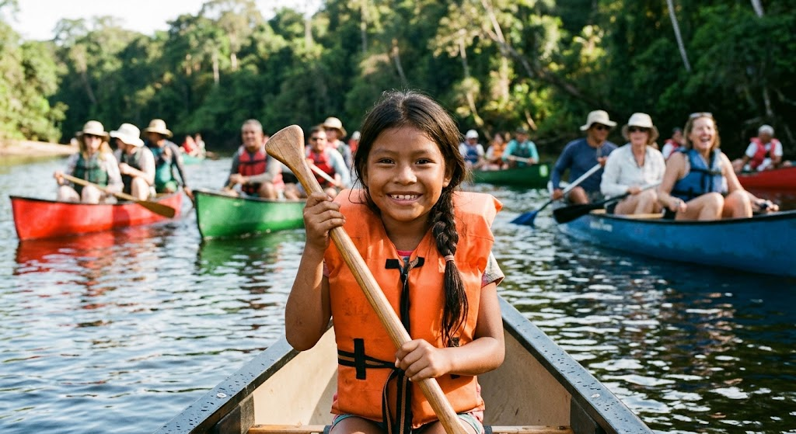
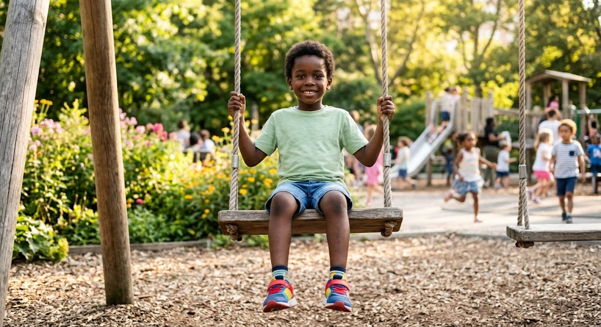
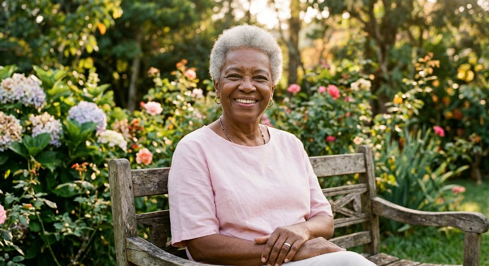
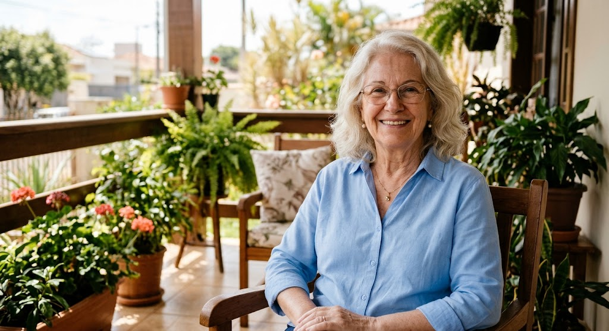
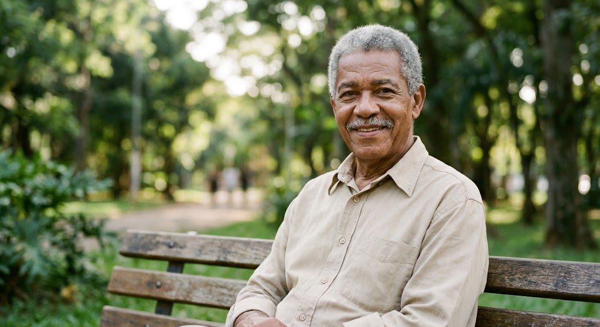
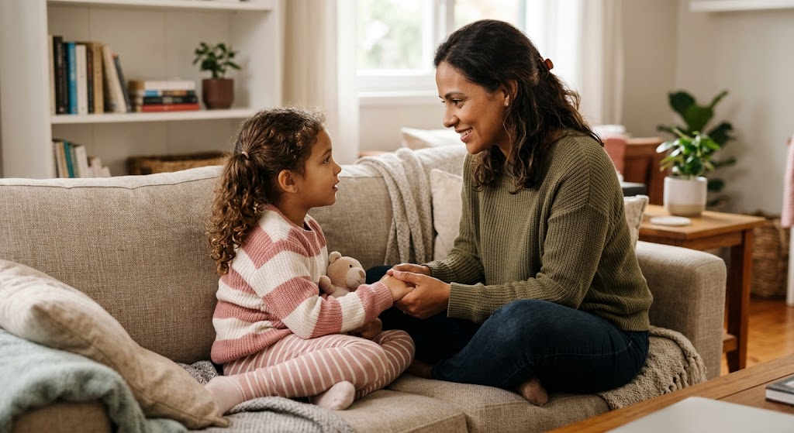

Fale sobre mudanças
Incentive sua filha a contar se notar algo diferente ou sentir preocupação. Escute com calma e sem assustá-la.
Falar sobre o corpo de forma tranquila e adequada à idade ajuda crianças e adolescentes a reconhecer mudanças e a pedir ajuda quando algo preocupa. O diálogo com pais, responsáveis ou outro adulto de confiança é parte importante desse cuidado.
O corpo muda conforme a pessoa cresce, especialmente durante a puberdade. Essas mudanças podem gerar dúvidas; conversar com respeito e sem vergonha permite que crianças e adolescentes compartilhem suas preocupações com um adulto de confiança.
Pais e responsáveis podem ensinar os nomes corretos das partes do corpo, falar sobre privacidade e limites, e deixar claro que a criança pode contar se sentir desconforto ou perceber algo diferente.

Espaço para compartilhar imagens e histórias com sensibilidade, respeito e autorização.





Não existe recomendação geral para fazer exames de rastreamento do câncer de mama em crianças. A necessidade de avaliação depende de sintomas, histórico e orientação da equipe de saúde.
Incentive sua filha a contar se notar algo diferente ou sentir preocupação. Escute com calma e sem assustá-la.
Se houver uma mudança que preocupa, converse com o pediatra ou procure uma unidade de saúde para receber avaliação adequada.
Exames não devem ser feitos sem indicação profissional. A equipe de saúde pode orientar se alguma avaliação é necessária.

Conversas sobre o corpo podem acontecer aos poucos, no dia a dia, com linguagem simples e apropriada à idade. Reforce que ela pode conversar com você ou com outro adulto de confiança sobre dúvidas, desconfortos ou mudanças.
Cuidar também é respeitar limites, privacidade e o tempo de cada criança. Se surgir uma preocupação de saúde, procure orientação profissional em vez de tentar avaliar ou tratar em casa.